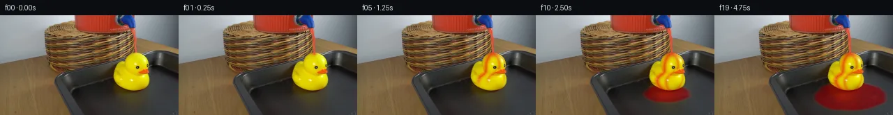

![首帧]()

Round 00
2026-11-05T05:07:15.018229+00:00像素候选变化代码 +252/−0inspection 更新
pixels e3c5598770fd6161 · code 0cd75551f68feca0
查看本轮 generate.py 真实 diff
--- previous/generate.py
+++ current/generate.py
@@ -0,0 +1,252 @@
+"""Reference-preserving continuation using only local procedural pixel operations."""
+from pathlib import Path
+import json
+import numpy as np
+from PIL import Image, ImageDraw, ImageFilter
+from scipy.ndimage import gaussian_filter, binary_fill_holes, binary_closing
+from scipy.interpolate import CubicSpline
+from artifact_io import save
+
+ROOT = Path(__file__).resolve().parent
+S = 4
+W, H = 256, 144
+rng = np.random.default_rng(85)
+source = np.asarray(Image.open(ROOT / 'first_frame.png').convert('RGB'))
+base = np.asarray(Image.fromarray(source).resize((W*S, H*S), Image.Resampling.BICUBIC), dtype=np.float32)
+Y, X = np.mgrid[:H*S, :W*S].astype(np.float32)
+X = (X+.5)/S-.5
+Y = (Y+.5)/S-.5
+
+def smoothstep(v):
+ v = np.clip(v, 0., 1.)
+ return v*v*(3.-2.*v)
+
+def poly_mask(points):
+ im = Image.new('L', (W*S,H*S))
+ ImageDraw.Draw(im).polygon([(round(x*S),round(y*S)) for x,y in points], fill=255)
+ return np.asarray(im,dtype=np.float32)/255
+
+# The duck matte is measured from the source yellow material, then holes are
+# filled to maintain the bill and eyes in its occlusion silhouette.
+r,g,b = source.astype(float).transpose(2,0,1)
+yy,xx = np.mgrid[:H,:W]
+yellow = (r>133)&(g>110)&(b<105)&(xx>161)&(xx<216)&(yy>52)&(yy<110)
+yellow = binary_fill_holes(binary_closing(yellow,iterations=1))
+duck = np.asarray(Image.fromarray((yellow*255).astype('uint8')).resize((W*S,H*S),Image.Resampling.BILINEAR),dtype=np.float32)/255
+# More exact subpixel material eligibility prevents spill onto the adjacent tray.
+duck *= smoothstep((base[:,:,0]-115)/35)*smoothstep((base[:,:,1]-83)/30)
+eye_bill_keep = (1-.92*np.exp(-((X-197)/1.6)**2-((Y-75)/1.7)**2))
+eye_bill_keep *= (1-.97*np.exp(-((X-212)/1.15)**2-((Y-75)/1.6)**2))
+eye_bill_keep *= 1-.95*poly_mask([(200,78),(210,77.5),(215,80),(213,83),(203,84),(198.5,81.5)])
+tray = poly_mask([(111,110),(162,95),(222,83),(241,83.5),(256,88),(256,144),(122,144)])
+tray *= 1-duck
+
+# Smooth, fixed surface-following curves. Nearest-curve fields are computed once;
+# travel times, width, liquid thickness, and highlight pulses vary with time.
+path_specs = [
+ ([(193.5,54.7),(189.6,57.7),(186.5,63),(184.5,69),(184.0,77),(182.6,83),(176.8,87.5),(173.7,93),(176.0,101),(182.5,108.5)], .88, 3.8),
+ ([(193.6,54.8),(197.8,57.8),(201.3,62),(203.3,68),(203.4,74),(200.5,79),(194.8,84),(188,90),(186.6,99),(192,108.7)], .59, 3.0),
+ ([(194.3,54.8),(201.3,56.5),(207.3,61),(210.7,66),(211.7,72),(211.4,79),(210.4,86),(209.5,94),(204.6,103),(201.3,108.5)], .37, 1.7),
+]
+fields=[]
+for points, strength, width in path_specs:
+ points=np.array(points,dtype=float)
+ knot=np.r_[0,np.cumsum(np.linalg.norm(np.diff(points,axis=0),axis=1))]
+ cs=CubicSpline(knot,points,axis=0)
+ ar=np.linspace(0,knot[-1],int(knot[-1]*3))
+ pts=cs(ar); tangent=cs(ar,1)
+ tangent/=np.linalg.norm(tangent,axis=1,keepdims=True)
+ d2=np.full(X.shape,np.inf,dtype=np.float32)
+ progress=np.zeros_like(X); signed=np.zeros_like(X)
+ for u,p,v in zip(ar/knot[-1],pts,tangent):
+ dx=X-p[0];dy=Y-p[1];q=dx*dx+dy*dy
+ replace=q<d2
+ d2[replace]=q[replace]
+ progress[replace]=u
+ signed[replace]=(dx*v[1]-dy*v[0])[replace]
+ fields.append((np.sqrt(d2),progress,signed,strength,width))
+
+# Static fine source-derived substrate shading and deterministic smooth fields.
+noise=gaussian_filter(rng.normal(0,1,X.shape).astype(np.float32),2*S)
+noise/=np.std(noise)
+
+
+def over(canvas, color, alpha):
+ alpha=np.clip(alpha,0,1)
+ if np.ndim(color)==1:
+ color=np.asarray(color,dtype=np.float32)[None,None,:]
+ canvas[:] = canvas*(1-alpha[:,:,None])+color*alpha[:,:,None]
+
+
+def render_pool(canvas,t):
+ elapsed=max(t-1.35,0)
+ if elapsed<=0:
+ return
+ growth=np.clip(elapsed/3.4,0,1)
+ spread=np.sqrt(growth)
+ cx=184+10*growth;cy=110.5+6*growth
… diff truncated; 165 more lines …